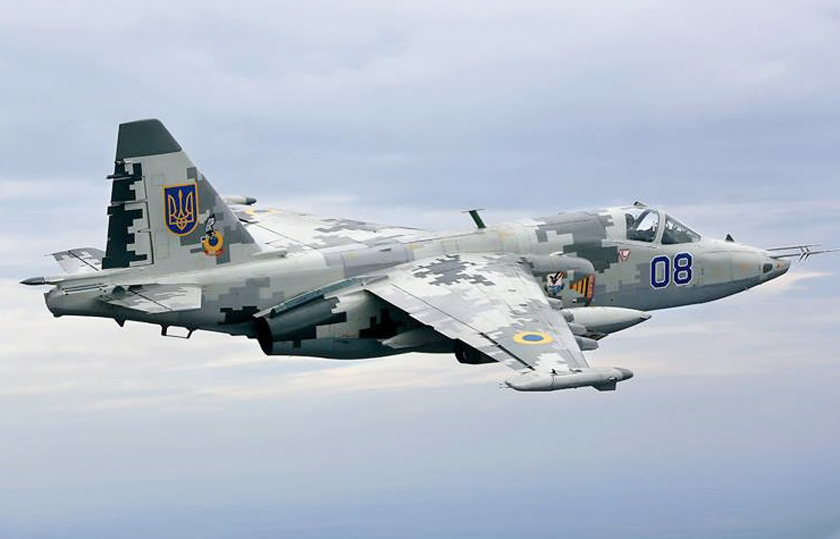

Су-24
Ітак Су-24 є основним озброєнням бомбардувальної авіації ВПС України. Призначений для завдання ракетно-бомбових ударів у простих та складних метеоумовах, вдень та вночі, в тому числі на малих висотах з прицільним ураженням наземних та надводних цілей.
Перебуває на озброєнні:
- 7-й Тактичній Авіаційній Бригаді (Старокостянтинів, Хмельницька область): Су-24, Су-24МР, Су-24М.
- 28-й Окрема Змішана Авіаційна Ескадрилья (Кульбакіне, Миколаївська область): Су-24М, Су-24МП.
- У 2-х бригадах на зберіганні.
Су-25
Одномісний броньований дозвуковий штурмовик, призначений для надання авіаційної підтримки у зоні бойових дій вдень та вночі за умов візуальної видимості цілі, а також знищення об'єктів із заданими координатами у випадку льотної погоди. Об'єктом ураження можуть бути наземні та надводні цілі, а також повітряні маловисотні, повільні цілі (гелікоптери і транспортні літаки).

Су-27
Радянський важкий багатоцільовий високоманевровий всепогодний винищувач четвертого покоління. Розроблений в ДКБ Сухого, у 1982 році прийнятий на озброєння Радянських ВПС.
Літак Су-27 спільно із літаком МіГ-29 є основним літаком винищувальної авіації ВПС України та використовується для боротьби з літаками, вертольотами та крилатими ракетами супротивника у повітрі, а також ураження наземних (морських) об'єктів.
МіГ-29
Багатоцільовий радянський винищувач четвертого покоління. Був основним багатоцільовим винищувачем країн Варшавського договору та СРСР впродовж 80-х років XX ст. Нині перебуває на озброєнні багатьох країн світу, у тому числі й України.
Літак МіГ-29 разом із літаком Су-27 є основною машиною винищувальної авіації Повітряних Сил України. Потенціал винищувача МіГ-29 дозволяє використовувати його як для виконання задач ППО та повітряного бою, так і для завдавання ударів по наземних (надводних) цілях. Усього в бойовому складі ПСУ станом на 2011 рік знаходилось 80 літаків МіГ-29 різних модифікацій.